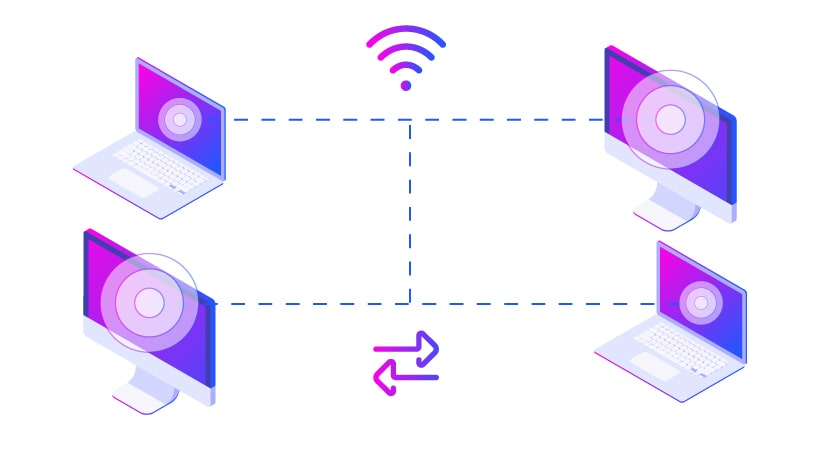

TCP/IP - 1970
TCP/IP (Transmission Control Protocol/Internet Protocol) es el conjunto fundamental de reglas estandarizadas que permite a las computadoras comunicarse y compartir información a través de internet y otras redes. Se basa en dividir los datos en paquetes (TCP) y dirigir estos paquetes a su destino (IP) mediante un modelo de cuatro capas: Aplicación, Transporte, Internet y Acceso a la red.